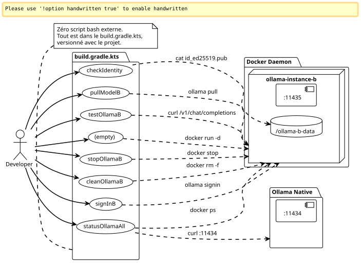

Home Gradle Plugin for Running Two Ollama Pro Instances in Parallel
Published on 08 May 2026
Why type docker commands by hand when you can encapsulate everything in Gradle tasks? Here’s how I industrialized my dual-Ollama Pro config with zero external shell script. Start, stop, identity, sign-in, pull — everything goes through`./gradlew`.
Introduction
In the previous article, I showed how to make two Ollama Pro accounts coexist on the same machine by isolating the second instance in a Docker container. The setup works, but everyday management quickly becomes painful: remembering the container name, running the right commands.docker exec, check which port is active…
You know that moment when you have 14 terminals open, and you’re typing`docker exec ollama-instance-b ollama list`for the fourth time, and you tell yourself 'there must be a cleaner way' ?
This is Gradle.
Not just for building code. Gradle like a conductor of local infrastructure. Tasks that provision, verify, test, and clean. All versioned in a`build.gradle.kts`who lives next to the`docker-compose.yml`.

Why Gradle for infra?
The question is legitimate. Gradle is a build tool. Normally, it compiles, it tests, it packages. It doesn’t launch Docker containers.
But Gradle is also a dependency graph engine — and that’s where it gets interesting for our case.
We want:
-
Let the container be started before a sign-in
-
That the identity be verified before a model pull
-
That an API test fails silently if the container is down
From the pure dependency graph. Gradle is tailored for that. The Kotlin DSL makes writing tasks fluid, and the`doLast`allows executing system commands as if it were application code.
And above all: no bashrc to maintain, no scripts lying around in`~/bin`, no Makefile next to the docker-compose. Everything lives in a single file, in the same place as the project code.
The complete build.gradle.kts
Here is the file I ended up writing. It does everything, from volume provisioning to the verification curl, going through the interactive sign-in.
import java.io.ByteArrayOutputStream
plugins {
base
}
// -------------------------------------------------------------------------
// Configuration
// -------------------------------------------------------------------------
val instanceName = "ollama-instance-b"
val instancePort = 11435
val instanceImage = "ollama/ollama:0.20.2"
val dataDir = file("${System.getProperty("user.home")}/ollama-b-data")
val nativePort = 11434
// Modèles à gérer — cloud Pro + un modèle local gratuit pour les tests
val proModels = listOf("deepseek-v4-pro:cloud", "gemma4:31b-cloud")
val freeModels = listOf("qwen3:0.6b")
// -------------------------------------------------------------------------
// Tâche préparatoire — création du volume si absent
// -------------------------------------------------------------------------
val prepareVolume by tasks.registering {
group = "ollama"
description = "Crée le répertoire de volume pour l'instance B si absent"
doLast {
if (!dataDir.exists()) {
dataDir.mkdirs()
println("Volume créé : ${dataDir.absolutePath}")
} else {
println("Volume existant : ${dataDir.absolutePath}")
}
}
}
// -------------------------------------------------------------------------
// Démarrage du conteneur Docker
// -------------------------------------------------------------------------
val startOllamaB by tasks.registering(Exec::class) {
group = "ollama"
description = "Lance le conteneur Docker pour l'instance Ollama B"
dependsOn(prepareVolume)
commandLine(
"docker", "run", "-d",
"--name", instanceName,
"-p", "$instancePort:11434",
"-v", "${dataDir.absolutePath}:/root/.ollama",
"-e", "OLLAMA_HOST=0.0.0.0",
"--restart", "always",
instanceImage
)
isIgnoreExitValue = true
doLast {
val alreadyRunning = executionResult.get().exitValue != 0
if (alreadyRunning) {
logger.lifecycle("Le conteneur '$instanceName' existe déjà — tentative de démarrage")
} else {
logger.lifecycle("Conteneur '$instanceName' lancé")
}
}
}
// -------------------------------------------------------------------------
// Arrêt du conteneur
// -------------------------------------------------------------------------
val stopOllamaB by tasks.registering(Exec::class) {
group = "ollama"
description = "Arrête le conteneur Docker de l'instance B"
commandLine("docker", "stop", instanceName)
isIgnoreExitValue = true
doLast {
logger.lifecycle("Conteneur '$instanceName' arrêté")
}
}
// -------------------------------------------------------------------------
// Affichage de la clé publique (Device Key)
// -------------------------------------------------------------------------
val checkIdentity by tasks.registering(Exec::class) {
group = "ollama"
description = "Affiche la clé publique SSH de l'instance B"
dependsOn(startOllamaB)
commandLine("docker", "exec", instanceName, "cat", "/root/.ollama/id_ed25519.pub")
standardOutput = ByteArrayOutputStream()
doLast {
val pubKey = standardOutput.toString().trim()
println("=".repeat(60))
println("Device Key (Instance B)")
println("=".repeat(60))
println(pubKey)
println("=".repeat(60))
println("→ Enregistre cette clé sur https://ollama.com/settings/keys")
println("→ Puis exécute : ./gradlew signInB")
println("=".repeat(60))
}
}
// -------------------------------------------------------------------------
// Sign-in interactif (Ouvrira le navigateur)
// -------------------------------------------------------------------------
val signInB by tasks.registering(Exec::class) {
group = "ollama"
description = "Lance l'authentification interactive Ollama pour le compte B"
dependsOn(startOllamaB)
standardInput = System.`in`
standardOutput = System.out
errorOutput = System.err
commandLine("docker", "exec", "-it", instanceName, "ollama", "signin")
doFirst {
logger.lifecycle("Authentification pour le Compte Pro B...")
logger.lifecycle("Ouvre ton navigateur et connecte-toi avec l'email du compte B")
}
}
// -------------------------------------------------------------------------
// Pull d'un modèle (paramétrable via propriété Gradle)
// -------------------------------------------------------------------------
val pullModelB by tasks.registering(Exec::class) {
group = "ollama"
description = "Pull un modèle sur l'instance B. Usage : ./gradlew pullModelB -Pmodel=nom:tag"
dependsOn(startOllamaB)
val modelName = project.findProperty("model") as? String ?: "qwen3:0.6b"
commandLine("docker", "exec", instanceName, "ollama", "pull", modelName)
doFirst {
logger.lifecycle("Pull du modèle '$modelName' sur l'instance B...")
}
doLast {
logger.lifecycle("Modèle '$modelName' pullé avec succès")
}
}
// -------------------------------------------------------------------------
// Pull de tous les modèles Pro (batch)
// -------------------------------------------------------------------------
val pullAllProModels by tasks.registering {
group = "ollama"
description = "Pull tous les modèles cloud Pro sur l'instance B"
dependsOn(startOllamaB)
doLast {
proModels.forEach { model ->
logger.lifecycle("→ Pull $model...")
val process = ProcessBuilder("docker", "exec", instanceName, "ollama", "pull", model)
.inheritIO()
.start()
process.waitFor()
}
logger.lifecycle("Tous les modèles Pro pullés")
}
}
// -------------------------------------------------------------------------
// Pull de tous les modèles gratuits (batch / première install)
// -------------------------------------------------------------------------
val pullAllFreeModels by tasks.registering {
group = "ollama"
description = "Pull tous les modèles locaux gratuits sur l'instance B"
dependsOn(startOllamaB)
doLast {
freeModels.forEach { model ->
logger.lifecycle("→ Pull $model...")
val process = ProcessBuilder("docker", "exec", instanceName, "ollama", "pull", model)
.inheritIO()
.start()
process.waitFor()
}
logger.lifecycle("Tous les modèles gratuits pullés")
}
}
// -------------------------------------------------------------------------
// Liste des modèles disponibles sur l'instance B
// -------------------------------------------------------------------------
val listModelsB by tasks.registering(Exec::class) {
group = "ollama"
description = "Liste les modèles disponibles sur l'instance B"
dependsOn(startOllamaB)
commandLine("docker", "exec", instanceName, "ollama", "list")
}
// -------------------------------------------------------------------------
// Health check — test API sur les deux instances
// -------------------------------------------------------------------------
val testOllamaB by tasks.registering {
group = "ollama"
description = "Teste la connectivité API de l'instance B avec un simple chat"
dependsOn(startOllamaB)
doLast {
val model = project.findProperty("model") as? String ?: "qwen3:0.6b"
logger.lifecycle("Test de l'instance B avec le modèle '$model'...")
val payload = """
{
"model": "$model",
"messages": [{"role": "user", "content": "Réponds uniquement par OK"}],
"max_tokens": 5
}
""".trimIndent()
val process = ProcessBuilder(
"curl", "-s", "http://localhost:$instancePort/v1/chat/completions",
"-H", "Content-Type: application/json",
"-d", payload
).start()
val response = process.inputStream.bufferedReader().readText()
process.waitFor()
if (response.contains("\"id\":\"chatcmpl") || response.contains("\"choices\"")) {
println("✓ Instance B OK — port $instancePort répond")
println(" Response: ${response.take(120)}...")
} else {
println("✗ Instance B INACTIVE — vérifie le conteneur avec './gradlew statusOllamaAll'")
println(" Raw: $response")
}
}
}
// -------------------------------------------------------------------------
// Health check sur les deux instances simultanément
// -------------------------------------------------------------------------
val statusOllamaAll by tasks.registering {
group = "ollama"
description = "Vérifie le statut des deux instances Ollama (native + Docker)"
doLast {
// Instance native
runCatching {
val process = ProcessBuilder(
"curl", "-s", "-o", "/dev/null", "-w", "%{http_code}",
"http://localhost:$nativePort/api/tags"
).start()
val code = process.inputStream.bufferedReader().readText().trim()
process.waitFor()
println(if (code == "200") "✓ Instance Native — port $nativePort OK (HTTP $code)"
else "✗ Instance Native — port $nativePort (HTTP $code)")
}.getOrElse {
println("✗ Instance Native — injoignable sur le port $nativePort")
}
// Instance Docker
runCatching {
val process = ProcessBuilder(
"curl", "-s", "-o", "/dev/null", "-w", "%{http_code}",
"http://localhost:$instancePort/api/tags"
).start()
val code = process.inputStream.bufferedReader().readText().trim()
process.waitFor()
println(if (code == "200") "✓ Instance Docker B — port $instancePort OK (HTTP $code)"
else "✗ Instance Docker B — port $instancePort (HTTP $code)")
}.getOrElse {
println("✗ Instance Docker B — injoignable sur le port $instancePort")
}
// Info conteneur
runCatching {
val process = ProcessBuilder("docker", "ps", "--filter", "name=$instanceName",
"--format", "table {{.Names}}\\t{{.Status}}\\t{{.Ports}}").start()
val status = process.inputStream.bufferedReader().readText()
process.waitFor()
println()
println("Conteneur Docker :")
println(status)
}
}
}
// -------------------------------------------------------------------------
// Nettoyage complet
// -------------------------------------------------------------------------
val cleanOllamaB by tasks.registering(Exec::class) {
group = "ollama"
description = "Arrête et supprime le conteneur Docker de l'instance B"
dependsOn(stopOllamaB)
commandLine("docker", "rm", instanceName)
isIgnoreExitValue = true
doLast {
logger.lifecycle("Conteneur '$instanceName' supprimé")
logger.lifecycle("Le volume ${dataDir.absolutePath} est conservé (identité persistante)")
}
}
// -------------------------------------------------------------------------
// Affichage des instructions
// -------------------------------------------------------------------------
val helpOllama by tasks.registering {
group = "ollama"
description = "Affiche l'aide des tâches Ollama disponibles"
doLast {
println("""
╔══════════════════════════════════════════════════════════════╗
║ Tâches Gradle — Pilotage Dual Ollama Pro ║
╠══════════════════════════════════════════════════════════════╣
║ ./gradlew startOllamaB Démarrer l'instance Docker B ║
║ ./gradlew stopOllamaB Arrêter l'instance Docker B ║
║ ./gradlew checkIdentity Afficher la clé SSH publique ║
║ ./gradlew signInB Sign-in interactif compte B ║
║ ./gradlew pullModelB Pull un modèle (-Pmodel=...) ║
║ ./gradlew pullAllProModels Pull tous les modèles Pro ║
║ ./gradlew pullAllFreeModels Pull tous les modèles gratuits ║
║ ./gradlew listModelsB Lister les modèles instance B ║
║ ./gradlew testOllamaB Test API avec un chat simple ║
║ ./gradlew statusOllamaAll Santé des 2 instances ║
║ ./gradlew cleanOllamaB Supprimer le conteneur ║
║ ./gradlew helpOllama Cette aide ║
╚══════════════════════════════════════════════════════════════╝
""".trimIndent())
}
}Here it is. Twelve tasks, a single entry point, and zero friction.
Anatomy of Key Tasks
startOllamaB` — The Launcher
Nothing complicated: a`docker run -d`with the right parameters. The trick is in`isIgnoreExitValue = true`.
isIgnoreExitValue = trueIf the container already exists, the command`docker run`fails (exit code ≠ 0). Without this property, Gradle would stop the entire build with an error. Here, the failure is silent — and the`doLast`detects if it was an "already existing" or a real error.
Le `doLast`It is crucial: it runs after executing the command, which allows inspection.`executionResult.get().exitValue`and log an appropriate message.
signInB` — The Interactive
This is the only task that requires human interaction. Gradle transmits`System.in`to the process so that the prompt`ollama signin`can be displayed normally :
standardInput = System.`in`
standardOutput = System.out
errorOutput = System.errWithout that, the sign-in would block because stdin would be closed and you would never see the prompt.
pullModelB` — The Configurable
A generic task that accepts a parameter via`-P`:
./gradlew pullModelB -Pmodel=deepseek-v4-pro:cloud
./gradlew pullModelB # fallback : qwen3:0.6bFallback is important:`project.findProperty("model") as? String ?: "qwen3:0.6b"`ensures that the task doesn’t blow up if we forget the parameter
statusOllamaAll` — The diagnostic
Two`curl`health on the ports`11434` et 11435, with a fallback in`runCatching`To avoid crashing if one of the instances is down. The output is structured:
✓ Instance Native — port 11434 OK (HTTP 200)
✓ Instance Docker B — port 11435 OK (HTTP 200)
Conteneur Docker :
NAMES STATUS PORTS
ollama-instance-b Up 3 hours 0.0.0.0:11435->11434/tcpA glance, and you know exactly what’s working and what’s wrong.
cleanOllamaB` — The Cleaning that Preserves Identity
commandLine("docker", "rm", instanceName)
isIgnoreExitValue = trueThe container is removed, but the volume`~/ollama-b-data`ispreserved. The SSH identity survives cleanup. At the next`startOllamaB`, the same keys will be reused — no need to redo the sign-in nor to re-register the Device Key.
|
|
Complete Workflow — From Zero to Two Sessions
Here is the ideal sequence for someone who joins the project and wants to set everything up without opening any documentation:
# 1. Premier contact — que faire ?
$ ./gradlew helpOllama
# 2. On démarre l'instance B
$ ./gradlew startOllamaB
# 3. On récupère la Device Key et on l'enregistre sur ollama.com
$ ./gradlew checkIdentity
# → copier-coller de la clé sur https://ollama.com/settings/keys
# 4. Authentification interactive
$ ./gradlew signInB
# 5. Pull d'un petit modèle gratuit pour tester la plomberie
$ ./gradlew pullModelB
# 6. Test API
$ ./gradlew testOllamaB
# 7. Si tout est vert, pull des modèles Pro
$ ./gradlew pullAllProModels
# 8. Vérification finale des deux instances
$ ./gradlew statusOllamaAllLess than two minutes, everything is provisioned. No README to read, no environment variables to set. The task`helpOllama`serves as integrated documentation.
Failed to generate image: PlantUML preprocessing failed: [From <input> (line 6) ]
@startuml
...
... ( skipping 126 lines )
...
skinparam StereotypeE {
BackgroundColor white
BorderColor black
}
skinparam StereotypeI {
BackgroundColor white
BorderColor black
}
skinparam StereotypeN {
BackgroundColor white
BorderColor black
}
skinparam UseCaseStereoType {
FontColor black
FontName Verdana
}
skinparam DefaultFontSize 11
actor Développeur as Dev
participant "Gradle
^^^^^
Syntax Error? (Assumed diagram type: sequence)
@startuml
!theme plain
skinparam DefaultFontSize 11
actor Développeur as Dev
participant "Gradle
(build.gradle.kts)" as Gradle
participant "Docker
Daemon" as Docker
participant "Ollama
Instance B" as OllamaB
participant "Ollama\nCloud" as Cloud
== Provisionnement ==
Dev -> Gradle : helpOllama
Gradle --> Dev : Aide et instructions
Dev -> Gradle : startOllamaB
Gradle -> Docker : docker run -d ollama/ollama:0.20.2
Docker -> OllamaB : Génération clés SSH (id_ed25519)
Docker --> Gradle : conteneur lancé
Gradle --> Dev : OK
Dev -> Gradle : checkIdentity
Gradle -> Docker : cat id_ed25519.pub
Gradle --> Dev : Clé publique SSH
Dev -> Cloud : Enregistrement clé SSH\n(sur ollama.com/settings/keys)
== Authentification ==
Dev -> Gradle : signInB
Gradle -> Docker : ollama signin (interactif)
Dev <-> Cloud : Login navigateur (compte B)
Docker -> Cloud : Échange token ⇔ Device Key
Gradle --> Dev : Authentifié
== Vérification ==
Dev -> Gradle : pullModelB
Gradle -> Docker : ollama pull qwen3:0.6b
Gradle --> Dev : Modèle pullé
Dev -> Gradle : testOllamaB
Gradle -> Docker : curl /v1/chat/completions
Gradle --> Dev : ✓ Instance B OK
== Production ==
Dev -> Gradle : pullAllProModels
Gradle -> Docker : ollama pull deepseek-v4-pro:cloud
Gradle -> Docker : ollama pull gemma4:31b-cloud
Gradle --> Dev : Modèles Pro pullés
Dev -> Gradle : statusOllamaAll
Gradle --> Dev : ✓ Native ✓ Docker B
@enduml
Why not make it a real Gradle plugin?
Legitimate question. Extract this`build.gradle.kts`Having a standalone Gradle plugin would have advantages: reuse between projects, declarative configuration, DSL extension.
But for now, it doesn’t make sense. This build has no complex business logic — it’s just a wrapper around Docker and curl commands. Adding a full Gradle plugin layer (with extension, unit tests, publication) would be overkill for 12 utility tasks.
Le `build.gradle.kts`It lives in the project that needs it. It is trivial to copy elsewhere. If one day I have three projects that depend on it, I will turn it into a plugin. For now, KISS.
|
The day you have three`build.gradle.kts`Identical in three projects, it’s the signal that we need to extract a plugin. Before that, duplication is less costly than abstraction. Developer wisdom. |
Lessons Learned
-
Gradle is not just a build tool— The dependency graph engine makes it a formidable infrastructure orchestrator.
doLast,isIgnoreExitValue,dependsOn: these three primitives are enough to drive a Docker container with the same reliability as a CI pipeline. -
isIgnoreExitValue` is your friend— In an ideal world,
docker run`on an already existing container would return a warning instead of an error exit code. In the real world, you put`isIgnoreExitValue = true`and you manage the diagnostic in`doLast. -
Configurable tasks kill ambiguity — Un
pullModelB`generic with-Pmodel=…`replaces N specialized tasks. A single task, a single doc, a single behavior. -
runCatching` for the health checks— When you test N endpoints, the crash of the first should not prevent testing the others.
runCatching+`getOrElse`per endpoint, and the diagnosis remains complete even in case of partial failure. -
The task
helpOllamaas executable documentation — Un `println()`A well‑formatted one replaces a three‑paragraph README. It’s self‑documenting, always up to date, and accessible without leaving the terminal.
Conclusion
We went from typing Docker commands manually to a complete, versioned, reusable Gradle workflow. Twelve tasks cover the entire lifecycle: provisioning, identity, sign‑in, pull, testing, diagnostics, cleanup.
The docker-compose + build.gradle.kts + opencode.json combo forms a clean trinity: Docker for isolation, Gradle for orchestration, OpenCode for consumption. Each layer has its responsibility, and none overstep onto another.
Next step? Automate the lifecycle in CI so that Ollama instances are available in ephemeral dev environments. But that’s another article.
Resources
Article published on 2026-05-08